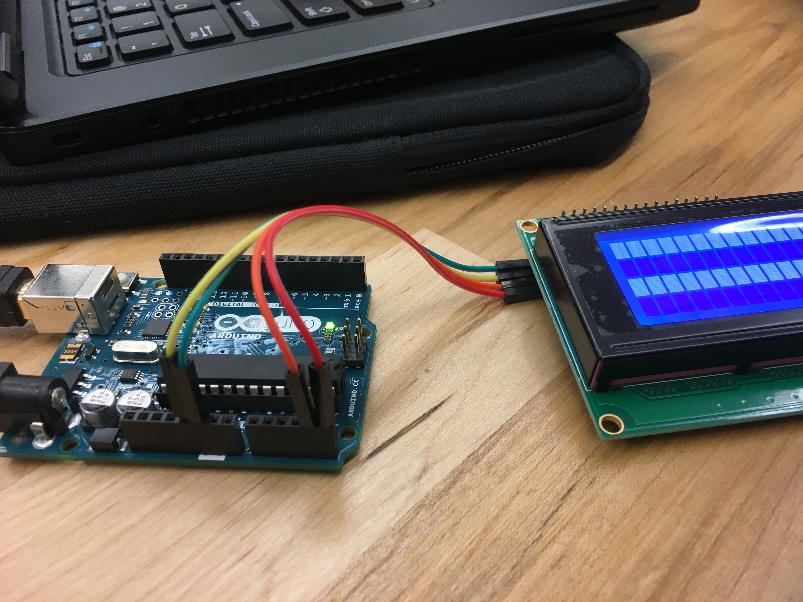
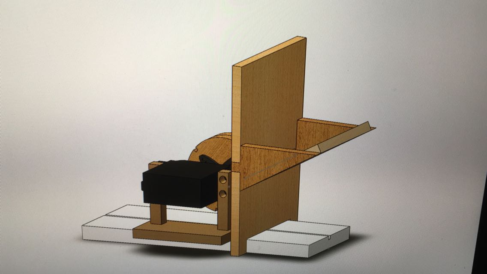

We learned a lot during our first sprint about the structure and working style of the team, and we were able to develop our idea for the project much further. Going into sprint two we have three main overarching focuses:
1. Completing a thorough design phase, particularly focused on mechanical aspects, to ensure that we are able to handle our biggest technical risk areas.
2. Approaching tasks with a more goal-oriented focus, so that our progress is more clear from our sprint deliverable.
3. Improving communication within the team and during the sprint review so that all of our work is well presented.
Computing
Our first task on the computing team was to implement the LCD screen so that it displays the resistance of the unknown resistor that the arduino is calculating.
 Our lcd screen connected to the Arduino Uno with a simple I2C communication link.Mechanical
Over the course of this sprint, we dove into a design process where we ideated and sketch modeled several different designs for the mechanical system. Here are a few of our ideas:  This is a caption. Here is how we implemented these ideas:
Electrical
Over the course of this sprint, we developed a final circuit and integrated the digital potentiometer.
This is a caption.this is our cool thing.
Goals For Next Sprint
For next sprint, we hope to have a functioning mechanical system as well as allowing our circuit to sense a larger range of resistances using the digital potentiometer. We also want to be able to output the measured resistance using the arduino and an LCD screen.